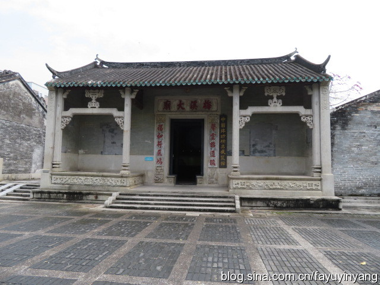

民居·会同村
会同村，位于珠海市金鼎镇。村内是清一色岭南民居，家家都是灰瓦、青砖、飞檐，建筑布局整齐，外形色调一致，
嵌填在“棋盘式”方格网形成的整齐的宅基地中。2006年，会同古村被颁布为区级文物保护单位，并申报市级文物保护单位。
据《香山县志》记载:莫与京（号会同）“爱梨冈山水之胜景”于 “雍正壬子”（即1732年）出资“购得其地”，然后让原来与他同村的鲍、
谭两姓乡人一起都迁居于此，而有些人家不能负担“版筑之费” ，他又“罄其资助之。乡人感其高义，因以号名村曰会同。
清同治至光绪年间，由当时的海外富裕宗亲投资，会同村在统一规划下重建。主要建筑包括2座碉楼、3座祠堂和40多座民居。
中西合璧的会同村选址隐幽，先抑后扬的空间引导暗合中国传统的诗意追求。
坐东向西的方位，东高西低的走向，山环水绕的环境，符合中国传统村落风水勘舆理念。
村落布局上吸收了西方现代村镇规划的先进理念，格局严整。最为罕见的是虽然历经170年中国近代政治经济的跌宕起伏
，会同村至今仍然保存完整古村的独特风貌，蕴含着丰富而珍贵的建筑历史遗存和人文历史信息。

民居·陈芳家宅
陈芳故居包括一座陈公祠、二座大屋、一座洋房、一座花厅及梅溪大庙和祠堂，
建筑面积2495平方米。
门前、屋巷铺设石板、砖地，种有芒果、树菠萝、白玉兰、
九里香等花木，周围筑砖墙，东西两角设置哨楼，组成陈氏家族庄园
式建筑，故居总占地面积5742平方米。整座建筑做工精细，每座屋
宇都用麻石砌成墙基，石阶拱门，四壁圆拱形门窗饰有各种花纹图案
的灰雕、砖雕，屋内雕梁画栋，美轮美奂。其中尤以花厅最富有特色。
陈芳，字国芬，珠海梅溪村人，生于是1825年，
第一次鸦片战争后，离家到香港、澳门等地学习经商，
1849年，24岁的陈芳随伯父到檀香山经商，从商店学徒
开始，后自立门户，经营甘蔗种植和制糖业，而成为华
侨第一位百万富翁，被誉为"商界王子"。1857年娶夏威夷
国王义妹朱丽亚为妻，被选举担任夏威夷国会议员，1881
年被清政府光绪皇帝钦命为中国驻夏威夷第一任领事，官居二品。
民居·石牌坊群
建于清光绪十二年(1886年)和光绪十七年(1891年)，原为4座，现仅存3座，均为三间三楼式石牌坊。
梅溪石牌坊现存三座，建于清光绪十二年（1886年）和十七年（1891年），是光绪皇帝为表彰陈芳及其亲属为家乡多有善举而赐建的。
牌坊用花岗岩建造，艺术造型中西合璧，是石牌坊中的珍品，1987年被珠海市政府列为重点文物保护单位，
1989年被广东省列为重点文物保护单位，现已辟为旅游区。
牌坊以花岗岩构造，庑殿顶，立鸱吻、鳌鱼、火焰珠。阑额、角柱石和须弥座雕刻着花卉、
瓜果、人物、瑞兽、暗八仙。正上方镶“圣旨”、“急公好义”和“乐善好施”等石匾。中座“急功好义”
石匾落款是：“光绪十二年八月六日奉钦加二品顶戴并加阶荣二级花翎候选道前夏威仁（注：即夏威夷译音）
国领事馆陈国芬敬建”。余左右两座“乐善好施”石匾分别落款是：“光绪十七年六月二十日奉钦加二品顶戴加二
级花翎候选道前领事馆陈国芬遵为先父母诰赠荣禄大夫陈仁昌诰赠一品夫人陈曾氏敬建”、“光绪十七年六月二
十日奉钦加同知府臣陈乐宾承为先父光禄寺署政诰赠奉政大夫陈应芝诰封五品太宜人母陈吴氏敬建”（注：
陈乐宾即陈应芝之长子，陈芳之长孙）。牌坊雕刻工艺精致。
民俗·疍家人
这是个有着典型岭南田园风光的村庄，随处可见纵横的河道、大片的蕉田和四散的楼房。
世代居住在这里的人们，还有一个鲜为人知的名字：疍家人。
“疍家就是过去讲的水上人家，现在珠海南屏一带的洪湾、
广生、广昌等沙田地区居住的，绝大部分是已经上岸的疍家人。”
今年59岁的南屏人吴金喜操着一口白话说。他是地道的疍家人，退休后一直致力
于保存传统的疍家文化。他告诉我们，疍家人其实有自己的方言：“疍家话和白话有点像，但口音却有不
同，比如会把妈叫做‘家（ga）’，把睡觉叫做‘咪mi 觉’。”
在中国的历史上，疍家是个特殊的群体。有人认为他们是古百越族的后代，
代表了中国历史悠久的海洋文化；还有人说，解放初期疍家差点儿成了中国第57个少数民族；有
一种说法则略显传奇——“东晋末年，农民起义领袖卢循顺海南下，失败后部下四散，有一部分乘船漂泊
成为水上人家，从事打渔、摆渡等职业。统治者们对他们‘约法三章’：不准上岸居住，不准读书识字，
不准与岸上人家通婚。一千多年来，这种清规戒律延续下来，水上人家就逐渐演变成为特殊阶层——疍家。”
民俗·飘色
乾务飘色有三台飘色，分别是乾北的“仕林祭塔”、乾西的“螃蟹过江”和乾东的“喜鹊练梅”最为著名.
为热烈庆祝澳门回归祖国八周年，珠海市斗门区八音队、斗门区乾务飘色队和金湾区三灶鹤舞表演队近百人，
走进澳门的大街小巷，参加“龙狮飞舞大巡游”活动，营造出热闹欢乐的节日气氛。这是由澳门北区社区组织的
“万众欢腾庆回归八周年”系列活动之一。飘色队表演的《观音坐莲》和《哪咤闹海》，深受澳门同胞的喜爱。
飘色源于抬阁,2000多年前的春秋 战国时期，安阳曲沟一带战乱频繁，被人称为“干戈沟”。
有一年，孔子周游列国途经此地，有感于当地民风淳朴，便用老家曲阜之“曲”代替“干戈”，
将其更名为“曲沟”，不仅希望两地结缘，同时希望曲沟远离战争。孔子临行时，村民们击鼓相送，
并选择唱歌好的男童、女童，由众人抬到高桌上，边行边唱，以让远去的孔子能回望到高桌上的歌舞。
后来，村民们在喜庆自娱时，仍沿用了这种歌舞形式。因为是抬着歌舞，故名“抬歌”。经过不断的传承演变
，后来，艺人们将高桌装饰成亭台楼阁的样式，给人以空中楼阁、云里雾里的感觉，故更名为“抬阁”。
又因在高台上演出，也称“台阁”.飘色是广东白话的称谓。

民俗·鹤舞
三灶鹤舞是广东省珠海市的传统民俗舞蹈。第三批国家级非物质文化遗产名录推荐项目公示结束，拥有700多年历史、
多次亮相全市民间艺术大巡游、为广大市民喜闻乐见的三灶鹤舞名列其中，成为金湾区首个 “国遗”项目。金湾区文
体旅游局局长张文表示，为了三灶鹤舞更好地传承，金湾区将打造一个非物质文化展示馆，通过图片、实物进行三灶鹤舞展示，
让珠海市民可以亲身体验鹤舞表演，以使这项富有本土特色的传统舞蹈得到更好的保护和传承。
“我们从2006年对三灶鹤舞开始进行发掘和保护，当时年轻人中已经几乎没有人学习鹤舞，
少数鹤舞传人都年事已高，鹤舞已经到了濒临失传的地步。”张文介绍说，为了使三灶鹤舞得到传承，
他们一方面积极申报市级、省级非物质文化遗产名录，争取上级支持，另一方面想方设法寻找青年的鹤舞传承人，使其后继有人。
2008年，在各方努力下，在三灶海澄小学开设鹤舞传承班，由三灶鹤舞传承人之一陈福炎老人亲自授课，
至今该班已开办3届，共有60多名小学生参加鹤舞学习。

水上婚嫁
水上婚嫁习俗便源于疍家人对歌成亲的礼仪。它形成于清初，成熟于清代同治光绪年间，融汇了广府文化和客家文化的元素，
在备婚宴、接新娘、拜高堂、会歌友等几个环节上，以船为交通工具，以咸水歌来贯穿婚嫁活动的全过程。
水上婚嫁融合了广府文化和客家文化的元素，以船为交通工具，在备婚宴、接新娘、拜高堂、会亲友等情节上，
以歌唱贯穿整个婚嫁活动的全过程。水上婚嫁的出现，对促进平民百姓的仁爱礼仪、衣着服饰、家居陈设、
民歌创作都是一次检阅，它欢庆、祝福、谐趣和真诚的文化魅力影响着珠江三角洲整个沙田区。
斗门水上婚嫁作为民间婚俗.经过几百年的生产劳动和生活演变，形成了独特的富有水乡地方特色的风俗文化
，尤其是水乡居民婚姻风俗特色，婚嫁礼仪独具特色。水乡人嫁娶礼仪颇为讲究；有互赠定情信物；新郎“望高堂”，
拜席、拜钱盒和梳头；新娘出嫁“哭婚”，“上头”；水上“花船”迎亲；过门“拜祖”、敬“过堂茶”；夫妻“拜灶君”、
“回门”等，部分礼仪延续至今。
宗祠·赵氏祠堂
黄杨山一带有多个赵氏大宗祠，均为南宋王朝兵败崖门之后，由散居当地的皇室后代所建，其中南门的绿漪堂保存最为完好
斗门镇的南门村赵氏后代都是魏王赵匡美的后人，
魏王是宋太祖和太宗的弟弟，没有当成皇帝，他的后代于南宋后期来到香山为县令，
后代赵若梓在陆秀夫的建议下就在斗门南门村繁衍隐居保存王族血脉。
在南门村众多的古建筑中，赵氏祖祠菉猗堂最为令人瞩目。录猗堂建于明代景泰五年（1454年），
被称作赵氏祖祠，是魏王赵匡美的第15代后人赵隆以其曾祖父的别名“菉猗”立祠纪念，从1454年到1997年间曾几次重修。
宗祠·荔山黄氏大宗祠
珠海斗门荔山黄氏大宗祠建于明代中叶，距今已有500多年，是珠海市最古老的宗祠群落。
据《黄氏垂裕堂家谱》的记载，该祠堂群原用“蚝壳所建，系按照錀公按察使司衙门之迹兴建而成”。
錀公就是黄錀，也是荔山人，他是香山（即中山。斗门与珠海宋明时隶属中山）自宋朝设县以来第一个进
士，官至明朝广西的按察使司副使。 后至清朝同治元年，该村又出了一名进士黄槐森，官至广西巡抚。槐
森显赫官场后，为“振兴乡风，光宗耀祖”，决定重建祖祠，于公元1875年动工。重
建后的祠堂为三座，成一字儿排开，前有广场后有花园，园林式的建筑，建筑技术非常精湛。
远观重建后的祠堂，庄严雄伟，如虎踞龙盘；近看，巍峨恢宏，如巨峰雄峙。目光所及，皆高墙巨柱，挑檐画壁，庄严肃穆。
大殿里的木柱气宇轩昂，镀金的龙凤楠木雕刻手工细致精美；每一道石门
顶端的石浮雕，雕刻的飞禽走兽与人物栩栩如生；柱与梁的衔接榫口准确严密，据
说难以嵌进一根头发丝，可以说是“巧夺天工，天衣无缝”。
宗祠·杨氏宗祠
位于珠海市南屏镇北山村。建于清朝同治七年(1868年) ，原是北山村民间祭祀的祠堂，面阔五间，
进深三间，硬山屋顶，有殿、堂、厅、院、厢、廊、乐台，两边还有书馆，建筑面积2478平方米，占地面积5300多平
方米。其园林式设计，中轴线对称的建筑布局，石础木框架的抬梁结构，以及精美的石雕、砖雕、木雕、灰雕等装饰，
别具匠心，气宇恢宏，反映出清代中国古建筑的技术水平和艺术特色，对研究封建宗法制度的演变，有着珍贵的实物参
考价值。1986年被列为珠海市文物保护单位。
杨氏大宗祠是一处始建于清代的家族祠堂建筑，属于杨氏家族祭祀祖先
和先贤的场所。位于珠海市南屏镇北山村。清朝同治七年(1868年)依山而建，坐南向北，占地8838平方米。
主体建筑为五间三进两旁加厢房的四合院布局。中轴对称、总面阔41.6米、总进深60米，建筑面积2520平方米。
硬山顶，青砖墙，抬梁与穿斗混合木构架，花岗岩石柱础，石条、石板作基础，采用木雕、砖雕、石雕、灰雕等工
艺装饰。门前立一对石狮子，庭院筑上围墙并种上花木。整座建筑规模宏大，古朴幽雅，体现了古代中国劳动人民
的聪明智慧和高超的建筑技艺。